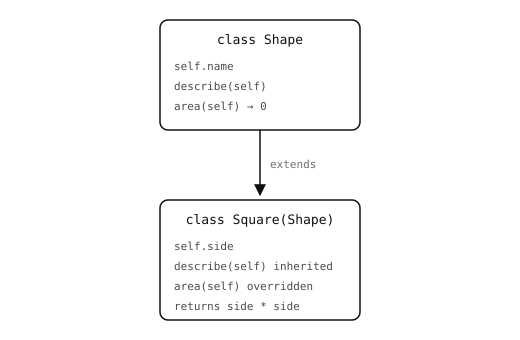

2.22. Arv¶
Arv låter en klass utvidga en annan klass – börja med alla dess metoder och attribut, lägg sedan till eller åsidosätt det som är annorlunda. Originalet kallas bas (eller förälder); utvidgningen kallas underklass.

Square återanvänder varje metod på Shape och åsidosätter de som den behöver specialisera.¶
2.22.1. Att definiera en underklass¶
Basklassen placeras inom parenteserna på class-raden:
class Shape:
def __init__(self, name):
self.name = name
def describe(self):
return self.name + " with area " + str(self.area())
def area(self):
return 0
class Square(Shape):
def __init__(self, side):
super().__init__("square")
self.side = side
def area(self):
return self.side * self.side
s = Square(4)
print(s.describe())
Utmatning:
square with area 16
Square ärver describe från Shape oförändrad och åsidosätter area för att returnera ett riktigt värde. Basens describe fungerar fortfarande eftersom den anropar self.area() – som vid körtid löses upp till åsidosättningen.
2.22.2. super()¶
super() returnerar en proxy som låter en metod anropa basklassens version av en metod. Den vanligaste användningen är att anropa basens __init__ från en underklass __init__ så att basen får initiera sina egna attribut:
class Square(Shape):
def __init__(self, side):
super().__init__("square") # run Shape.__init__
self.side = side
Att glömma super().__init__ är en vanlig källa till buggar: attribut som basen skulle ha satt blir aldrig satta, och de ärvda metoderna som förlitar sig på dem kraschar senare.
2.22.2.1. Den implicita basklassen¶
Varje klass ärver implicit från object, roten i Pythons typhierarki. Metoder som __repr__, __eq__ och maskineriet bakom attributåtkomst kommer alla därifrån även när en klass inte deklarerar någon bas. Att skriva class Foo(object): explicit och att skriva class Foo: är likvärdigt i modern Python; den senare är den konventionella formen.
2.22.3. När arv hjälper – och när det inte gör det¶
Använd arv när en klass verkligen är en mer specifik sorts av en annan och delar det mesta av beteendet. Det klassiska testet är ”är-en”-kontrollen: en Square är en Shape.
När två klasser bara råkar dela några få hjälpfunktioner är arv överdrivet. Ta till komposition i stället: låt en klass hålla en instans av den andra som ett attribut och använda den genom det attributet. Formen är ”har-en”, inte ”är-en”:
class Logger:
def log(self, msg):
print("[log]", msg)
# inheritance: Worker IS-A Logger
class WorkerInherits(Logger):
def run(self):
self.log("starting")
# composition: Worker HAS-A Logger
class WorkerComposes:
def __init__(self):
self.logger = Logger()
def run(self):
self.logger.log("starting")
Båda fungerar. Den komponerande versionen är oftast bättre eftersom den:
Håller gränssnitten små.
WorkerComposesexponerar endastrunochlogger.WorkerInheritsexponerar ocksålog– anropare kan skrivaworker.log(...)direkt, oavsett om det var avsikten eller inte.Frikopplar livslängder. Loggern kan bytas ut, delas mellan workers eller konstrueras olika per worker, allt utan att röra
Worker-klassen. En underklass är fastbultad vid sin bas.Undviker krockar mellan metodnamn. Två baser som båda definierar
runkrockar när en klass försöker ärva från båda; två attribut krockar aldrig.
En praktisk tumregel:
Använd arv när underklassen verkligen är en sorts av basen och varje metod på basen är meningsfull även på den –
Squareär enShape;MemoryErrorär enException.Använd komposition för allt annat – när du bara vill ha beteendet hos en annan klass, inte dess identitet. Den mesta verkliga koden använder komposition betydligt oftare än den använder arv.